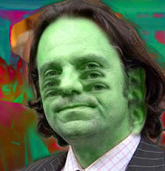
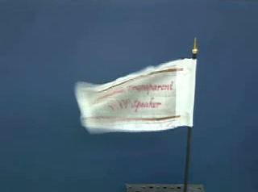
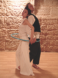
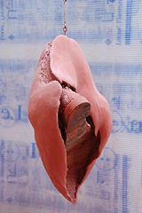

Archives 2008-2
Actualités / blog des sites
23/12/2008
La mafia vous souhaite de
Joyeuses Fêtes :)
Edito de fin d'année
« La mafia s'est toujours développée là
ou l'État était absent ; de même, les trafiquants d'armes, de médicaments
ou d'objets volés et les proxénètes ont trouvé refuge sur Internet, et les
psychopathes, les violeurs, les racistes et les voleurs y ont fait leur
nid. » (...)
« Combien faudra-t-il de jeunes filles
violées pour que les autorités réagissent ? Combien faudra-t-il de morts
suite à l'absorption de faux médicaments ? Combien faudra-t-il
d'adolescents manipulés ? Combien faudra-t-il de bombes artisanales
explosant aux quatre coins du monde ? »

Ces « brillants propos » sont de M. Frédéric
Lefebvre, un député qui n'est heureusement pas suivi par son propre parti
dans sa croisade parlementaire aveuglément anti-web ni dans sa demande de
prise de contrôle de l'internet français par le CSA (Conseil supérieur de
l'audiovisuel), un peu comme en Chine. Ce monsieur, lobbyiste réputé,
oublie le rôle dynamisant des acteurs web et des entités qu'ils mettent à
disposition pour que les citoyens s'instruisent, se divertissent et
dialoguent.
Là où la télévision diffuse à discrétion,
depuis des décennies, des images violentes - avec l'accord du CSA -,
n'oublie-t-on pas de compter combien de personnes en difficulté ont été
sauvées par quelques mots chaleureux ou un avertissement utile sur un
forum ? La diabolisation du web en France est maladive.
Les chiens aboient, la caravane passe, mais
l'ingratitude, le manque de discernement et les mots qui blessent fâchent.
Emmanuel Luc
Éditeur
Le Réseau ArtRéalité se porte bien en cette
fin d'année en termes d'audience. Nous vous remercions de votre intérêt et
de votre fidélité.
Bilan. Nous
avons accompli en 2008 des avancées significatives, notamment avec
l'ouverture de la galerie
Walesgal et la
première « Nuit » associée, événement réel qui a eu lieu le 11/10 dernier
(de gros chantiers qui vont se prolonger ces prochaines années), la
poursuite des Dialogues de Dotapea avec
un nouvel intervenant scientifique
spécialisé,
l'émergence d'un nouveau regard sur l'art tenant compte de la
perception humaine et la première
publication
d'une oeuvre littéraire sur ArtRéalité, tandis que se poursuivent le
travail de traduction des sites et la mise à jour des données.
Perspectives.
L'arrivée en cette fin d'année d'une toute nouvelle équipe
d'informaticiens nous permet de vous annoncer que nous vous réservons
quelques surprises de taille pour 2009.
Joyeuses Fêtes !
20/12/2008
Retour sur la Nuit
de Walesgal
Quand vidéastes et comédiens travaillent
ensemble, cela donne ce genre de créations :
cliquer ici.

28/11/2008
Un haut-parleur qui
(se) déchire
C'est beaucoup plus qu'une curiosité. Notre
très sélective section Hi-tech présente une nouveauté révolutionnaire.
Elle concerne le son mais les plasticiens en saisiront tout de suite la
portée.
Lien
14/11/2008
A quoi sert vraiment la
molette pigmentaire ?
Cette question est abordée dans le tout
nouveau chapitre XXIII des Dialogues de
Dotapea.
8/11/2008
Problèmes de
diffusion vidéo : suite et fin
A part un dernier petit récalcitrant, ils
sont réglés à ce jour.
La navigation vidéo sur le réseau ArtRéalité
est rétablie.
Toutes nos excuses pour l'inconfort subi
durant cette période de transfert.
Oleg Kulik : le
monde artistique français devant une absurde dérive policière
Lors de la récente édition 2008 de la FIAC
(Paris), la police, saisie d'une plainte émise par des inconnus a décroché
des oeuvres du plasticien Oleg Kulik dont les galeristes parisiens ont été
placés en garde à vue plusieurs heures avant d'être libérés avec
l'interdiction de raccrocher les oeuvres incriminées.
Implantés et bien connus à Paris depuis dix
ans, ces intervenants ont été accusés de diffuser des images dégradantes,
on ne sait trop pourquoi dans la mesure où le travail de Kulik sur les
relations entre humains et animaux a évidemment et notoirement une
dimension conceptuelle et les pratiques suggérées, bien sûr simulées, ne
sont pas ce que l'on appelle des oeuvres pornographiques. Et quand bien même, il faudrait alors à ce titre
incarcérer nombre de grands maîtres qui depuis la Renaissance se sont
intéressés au corps.
Une affaire où les autorités ne semblent pas
avoir fait preuve non de tolérance - ce n'est pas la question car le sujet
a suscité dépassement et sublimation dans l'art depuis des siècles là où
la pornographie la plus brute est devenue aisément accessible - mais bien
d'une clairvoyance élémentaire.
Une telle attitude porte grief à des
intervenants sérieux dans un lieu d'exposition sérieux et même
emblématique des capacités de la France à conserver une place de choix
dans l'univers de l'art contemporain mondial, et pourrait paraître le
reflet d'un infantilisme déplacé ou d'une certaine confusion mentale de
l'ordre du ridicule et du risible. Un ridicule risible malheureusement
nuisible pour toute la communauté nationale car nous ne vivons pas dans un
village mais sur une planète où tout se sait et se voit, y compris notre aptitude à
rester crédibles.
29/10/2008
Nuit de Walesgal : le
film
Première session, premier événement,
premiers applaudissements, premières ventes... et premier regard, celui du
cinéaste Pascal Aubier.

Retrouvez Bernadette Mercier, Hans Bouman,
les Cosmopolite PL, les Silicate, les plasticiens de la session, et tant
d'autres.
Cliquer ici
22/10/2008
La place de la vidéo dans
une foire d'art contemporain
Table ronde organisée par LaCritique.org dans le cadre de Show-off
24/10 - Espace Pierre
Cardin - Paris
Il sera question d'un sujet qui auquel nous
sommes plus que sensibles sur ArtRéalité : si la vidéo est présente dans
les manifestations d'art contemporain, elle ne l'est pas dans les foires.
Dit autrement, il est bien difficile de les vendre. Et au fond pourquoi ?
Lire le flyer
17/10/2008
Les Cosmopolites PL en
scène
jusqu'au 26
Vous avez apprécié la Nuit de Walesgal ?
Pour prolonger le plaisir dans le registre théâtral, il suffit de venir
voir les comédiens en scène
les 17 et 18 octobre 2008 à 20h30 au
Centre Culturel Franco-Japonais Tenri
8-12 rue Bertin Poirée Métro Châtelet
Réservations : 01 44 76 06 06
ecbp at tenri-paris.com
Plein tarif : 12 euros/ tarif réduit 10 euros / enfants 5 euros
Une présentation du spectacle - déjà joué au
printemps - est disponible
ici.
12/10/2008
Walesgal est en
mode réel
jusqu'au 26
Vous étiez quelques centaines hier lors de
notre événement-spectacle d'art contemporain. MERCI !
Vos applaudissements très chaleureux, vos
rires aussi, votre attention soutenue, ont enchanté les quatorze artistes
(plasticiens, cantatrice, comédiens, vidéastes et musiciens) comme
l'ensemble des trente-six intervenants de la Nuit. Merci encore.
Nous voici donc dans une période de quinze
jours où vous pouvez venir voir les oeuvre des quatre exposants de
Walesgal.com et de notre invité spécial, Hans Bouman.
Toutes informations sur
Walesgal.com.
11/10/2008
La Nuit de Walesgal jour
J
Chers amis lecteurs ce soir est l'émergence
dans le réel du Réseau ArtRéalité.
Toutes informations sur notre Walpurgis tout
contemporain (adresse, intervenants, thèmes, ...) ->
cliquer ici
 3/10/2008
3/10/2008
La Nuit de Walesgal à j-8
Nous sommes dans une période de répétitions
et de mises au point.
Une évidence à ce stade du projet : le mot
"transversalité" n'est pas usurpé.
Hans Bouman et notre Reine de la Nuit, la
cantatrice Bernadette Mercier, ont su travailler ensemble. Le résultat
sera une oeuvre vidéo, Les lauriers d'Eros.
Et de même, les Cosmopolites PL (comédiens)
jouent en totale intelligence dans le rayon du vidéoprojecteur des
Silicate (vidéastes-musiciens).
En 2008, le multimédia est une réalité.
Rendez-vous le 11, Paris XIème. Informations
-> cliquer sur l'image.
13/09/2008
La première session de
Walesgal.com est en
place
et la Nuit de Walesgal est
confirmée le 11 octobre Paris XIème
Invité spécial : Hans
Bouman
->
toutes
informations
L'exposition Sophie Sainrapt,
c'est 72 pages web,
une vidéo de 21 minutes, trois autres en imagerie de synthèse et une
présentation écrite par l'écrivaine et critique d'art Ileana Cornea.
Cliquer ici.
La Nuit de Walesgal est le moment où les
intervenant ArtRéalité passent du virtuel au réel à l'occasion d'un
spectacle d'art contemporain et d'une exposition sur trois week-ends.
Notre invité spécial le plasticien multimédia Hans Bouman, réalisera une vidéo et mettra en scène la cantatrice
Bernadette Mercier
- Reine de la Nuit - qu'il dirigera également lors d'une intervention dans
la soirée du 11.
Citons quelques autres intervenants de cette
Nuit inaugurale et transdisciplinaire
aux accents de Walpurgis : le cinéaste Pascal Aubier, le réalisateur André
Gaultier, la Compagnie Cosmopolite PL (dir. Sylvaine Hinglais), les jeunes
vidéastes-musiciens Silicate (www.silicate.fr)
de l'École nationale d'Art de Cergy, etc...
Parlons de cette première session, sorte de
phrase d'introduction, de liminaire, qui pourrait se nommer ainsi :
Et tout cela donne des
petits poissons,
autour d'un rappel de
l'origine du monde
Des souffles capturés d'Évelyne Coutas aux brouillages et aux piratages
complices d'Erick Derac, de la célébration de Vénus et du vivant,
patiemment élaborée par Konrad Loder, aux rappels que Sophie Sainrapt nous
adresse au sujet du lien entre érotisme et maternité, il s'agit ici de
parler, de façon contemporaine, de l'origine du monde.
A exposition inaugurale, sujet existentiel. L'intervention du plasticien
multimédia Hans Bouman et de la cantatrice Stefanie Raffaello rappellera
combien nos souffles vitaux donnent des "petits poissons" et sont au-delà
moteurs d'une évolution.
En 2008, Walesgal a été créé au cours du
printemps. C'est aujourd'hui 600 pages web et des dizaines de vidéos pour
seulement quatre artistes exposants, et une
présence réelle réfléchie.

3/08/2008
[révision le 5]

Nouvelle exposition sur
Walesgal.com :
Evelyne Coutas
212 pages web, une vidéo de 24 minutes, 8
autres en imagerie de synthèse, une présentation spécialement écrite par
Christian Gattinoni : cette exposition s'inscrit parfaitement dans la
ligne des engagements de la "galerie-sans-murs".
Regards transversaux, lectures subjectives
des oeuvres et larges espaces d'exposition pour un travail artistique qui
est lui-même emblématique d'une démarche de plasticienne contemporaine. Un
peu comme Jean-Pierre Brazs, Evelyne ne rechigne pas, c'est le moins que
l'on puisse dire, à employer les techniques du passé et du présent. Elle
s'en fait l'alliée pour nous faire suivre la trace d'êtres de nature
insaisissable, ineffable, fantomatique.
Cliquer ici
Courant Août, Sophie Sainrapt sera présentée
par Ileana Cornea, puis suivront un ou plusieurs invités d'honneur.
Tout cela en attendant notre
Nuit.
Liquidation de Deserres France
Triste nouvelle qui surprend tout le monde.
C'est pourtant officiel : contre toute attente, au coeur de l'été, le
Canadien Omer Deserres lâche l'affaire, celle-ci s'écroule et 163 salariés
se trouvent "sur le carreau".
Artacrea (marques
Graphigro, Rougier et Plé, Crea), en difficulté depuis quelques
années - 2001 semble avoir été une charnière - avait été repris courant
2007 pour devenir Deserres France. Une société qui, selon ses salariés,
marchait bien.
Elle ne marchait en fait sûrement pas si
bien et comment l'aurait-elle pu alors que l'ancienne direction (menée par
M. Eddy Scarfoglio) s'était séparée en 2004, pour
des raisons obscures non élucidées à ce jour, de l'un des deux
piliers de l'entreprise, à savoir le magasin Graphigro de la rue de Rennes
(Paris) dont le chiffre d'affaire avait fait de ce lieu fréquenté par des
milliers d'étudiants une véritable "success story" dans les années 90.
Depuis 2007, l'entreprise donnait l'illusion
de la stabilité. En juin encore, un simple salarié nous donnait témoignage
en toute bonne foi de ce qu'il croyait être la bonne santé de la société,
qu'il mesurait notamment au réassort, efficace. Le 17/7/2008, la
liquidation est prononcée à la surprise de tous (y compris du CE selon un
témoignage direct et même de la DRH - autre témoignage direct). Ultime
recours, Deserres France a alors jusqu'au 31/7 pour trouver un repreneur
et échoue. Le 31, les juristes mandataires (cabinet MJA) envoient donc aux
salariés leur lettre de licenciement accompagnée d'un formulaire ASSEDIC à
la présentation très "cosy". L'affaire est pourtant close d'une manière
particulièrement brutale. Certains salariés partis
sereinement en vacances auront une très mauvaise surprise à leur retour.
Si l'on comprend qu'une entreprise connaisse
des difficultés, on a du mal à excuser la brutalité de l'annonce. Rien
n'aura été épargné aux salariés - ni aux clients - de cette désormais
défunte entreprise au cours de ce début de IIIème millénaire.
Une importante niche économique est
désormais vacante.
Situation d'autant plus baroque que les
concurrents ne pourront pas absorber la demande. Où vont se fournir les
étudiants et les artistes ?
La France, à force, peut-être, de s'enfoncer
toujours plus dans une économie devenue foncière (plus de 50% des
investissements sont immobiliers dans ce pays), ne saurait-elle plus
répondre à une demande commerciale (mobilière) d'une nature aussi basique,
aussi élémentaire ? Eh bien oui. Même si cela surprend, on ne peut qu'en
faire le constat en comptables, au moins pour ce secteur où il y a
demande.
Les 163 licenciés de Deserres France, la
surprise passée, vont avoir le loisir de le faire.
Encore bravo, Monsieur Omer Deserres. Ca,
c'est de la gestion !
Et chapeau bas pour cette
liquidation-surprise estivale dont chacun mesurera "l'élégance".
ArtRéalité partage profondément le désarroi
des salariés licenciés, en particulier celles et
ceux qui pendant des décennies ont délivré un savoir utile à l'art
contemporain, aux artistes, aux enseignants, aux amateurs, à vous
tous qui nous lisez.
Merci, très chers confrères, pour votre
travail, courage pour votre avenir.
Emmanuel Luc
Éditeur
Accès vidéo : quelques
problèmes transitoires
Fin juillet-début août, l'opérateur Free
nous a posé quelques problèmes imprévus concernant les "players" de nos
plus anciennes vidéos. Alors que nous avions déjà largement entamé un
processus de déménagement massif (pas tout à fait fini à ce jour) vers
notre serveur dédié, était-il élégant de faire subir à nos visiteurs une
pression inutile au dernier moment d'une période transitoire ? Les
premières victimes de cette précipitation inutile et peu élégante sont les
usagers du Réseau ArtRéalité. Ils jugeront l'opérateur Free en
conséquence.
Le moins que l'on puisse dire est que le moment était mal choisi.
22/07/2008
Nouveau chapitre pour un
nouvel intervenant dans les Dialogues de Dotapea
Jean-Claude, physico-chimiste spécialiste
des propriétés optiques des matériaux hétérogènes, fait son entrée dans le
chapitre XXII des Dialogues.
Celui-ci aborde le thème très important dans
notre domaine du mouillage des pigments (et autres substances). L'occasion
d'aborder au-delà différents concepts scientifiques comme la polarité, la
tensioactivité ou encore la notion de moment, sans oublier des
implications concrètes, notamment pour les industriels de la peinture.
A lire donc, les interventions de
Jean-Claude et de Jean-Louis dans
le chapitre XXII,
Le mouillage pigmentaire
et son annexe,
Le moment, les pôles

8/7/2008
Konrad Loder sur Walesgal
Ce 8 juillet s'ouvre la seconde exposition
de la "galerie sans murs" du Réseau ArtRéalité. Histoire de démontrer qu'à
être virtuel on n'en est pas moins sérieux et que l'on aime tirer parti de
notre média, nous exposons ce que l'on pourrait nommer un dispositif
informatique mis au point par l'exposant lui-même. Une première sans doute
pour une galerie web.
Autre première, Konrad Loder actualisera
lui-même à volonté son espace d'exposition.
Celui-ci est agrémenté d'une visite
d'atelier et des présentations de
Jacques Py, de
Claude Spielmann et de
votre serviteur.
Une expo en accès libre sur
Walesgal.com
La
Nuit se précise
Préparez-vous : c'est pour le 11/10/2008
(Paris XIème) et nous vous préparons quelque chose de tout à
fait exceptionnel pour ce passage annuel du virtuel au réel qui fait
partie du projet Walesgal (lien).
Au programme,
* une
exposition du 11 au 25.
Vous y retrouverez les oeuvres des exposants
de Walesgal ainsi qu'un invité spécial.
*
une soirée inaugurale, en fait un spectacle
d'art contemporain inhabituel qui est d'ores et déjà en préparation. Plus
de détails un peu plus tard.
Emmanuel Luc
Retour
début de page